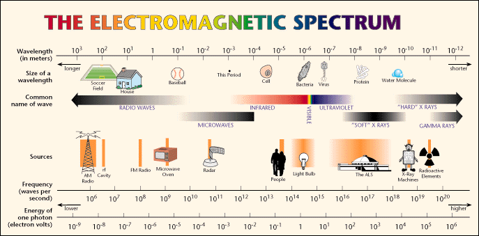

Electromagnetic fields are present nearely everywhere in our environment, but they are invisible to the human eye. If you are sensitive to EMF, you will experience symptoms like:
| Nervous Symptoms | fatigue, stress, sleep disturbances |
|---|---|
| Skin symptoms | burning sensations, rashes |
| Body symptoms | pains and aches in muscles |
| Eye symptoms | burning sensations |
| Other symptoms |
|
In following lecture posted in Youtube by Dr. Martin Blank you can find more information about dangers EMF imposes on human health
Electromagnetic spectrum is a range of frequencies of electromagnetic radiation and their respective wavelengths and photon energies. Only very small part of which is visible to the human eye.
Following image shows electromagnetic spectrum:
All spectrum can be divided into 2 parts: Ionizing radiation and Non-Ionizing radiation. Visible light is only very small part of Non-Ionizing radiation. As we can see in the below picture, only very small amount of the electromagnetic spectrum can be seen, this means that most of it we are not able to see. As it turns out even though we are not able to see it, it still affects us in various ways.
Ionizing radiation consists of:
Non-Ionizing radiation consists of
Hi, my name is Agi. I strive to make a difference in other people's lives using my skills and talents. Always in a positive mindset, mindful, seeking deeper meaning and aspire to see the bigger picture and solve problems by paying attention to details and using my investigation, and observation skills. This website is about things I intersted in. I like to find out how things work and my favorite question is WHY.
I am intersted in
Studying astrology has set me on a very exciting path to understand myself and world around me much better. Trying to figure out how it all works together and what can I do to make this world a better place than it was when I arrived here. This might suprise you, but actually Astrology at its very basis is all about Psychology. Astrology is language of symbols and all those symbols are psychological. Yes, astrology also have predictive techniques, but I am more interested in the psychological side.
I was feeling stuck for some time and I knew that I am not doing what I want to do. At the same time, I did not know what is exactly what I want to do, so I hesitated to take any action. I have bachelor's degree in mathematics so I have mind that is logical and looking for precition and details but at the same time, I have always been interested in the things that are hidden, unexplained and different from conventional. I have always been interested in astrology, always found it fascinating. One day approximately 2 years ago I decided to do something about it. I started to study astrology with Sam Geppi and have Level 1 certificate of Vedic Astrology. Have also studied courses with Vic Di Cara and Ernst Wilhelm for Vedic Astrology, recently have started to read Steven Forrest books about Western Astrology.
After a while of studying astrology, I noticed something very intersting has happened. Astrology for me actually explained and gave me a framework to understand how the world around me works. It explained me so much only studying symbols, even not looking at any charts yet. I found it to be a very powerful tool to understand how world around me works and my chart gave me a better understanding of my place in it.
I heard about Mudras before, but one day googling around I discovered one very interesting site about how mudras or hand yoga relates to astrology. And I was interested to find out more and it all seemed very fascinating. I started to study them in private mentorship with Sabrina Mesko and applied for Mudra Certification mentorship. It has 5 levels in total and I am currently studying at level 4. This led me to many realizations and profoundly deepened my understanding of myself and the world around me. It helped me to realize that I need to start taking action if I want some change to happen in my life and that my life is in my hands and only I am in charge of it. It thought me how to reflect on myself and that enabled me to observe myself and understand what I have oseserved. That enabled me to look at it from different angle and this changed my life very profoundly. I realized that I was focusing on trying to fit in, trying not to be differnt and putting a lot of effort into that. I understood that I need to shift my focus and instead focusing on being different and actually standing out from the crowd. I understood that it is not my weekness, but it is my strength and it is what makes me different and unique. It is amazing to see how observation has a very powerful impact on reality and quantum mechanics is a very good example of that, were electrons change their behaviour depending on if they are observed or not More info. Everything is connected.
My astrology and mudra studies made me realize that what I want to do in my life is to use my skills and all my innate talents to actually make this world a better place. I came to realization that studying psychology would add a lot to my skill set so I started to reaserch the ways how I would be able to accomplish that and found it. My aswer was Birkbeck, University of London were I am studying now and I love it as it also enables me to work at the same time since studies are in the evenings. Since studying here I have learned a lot of new things and have had some amazing new discoveries. Most influental one is that even things that are considered to be certain are actually not certain at all, but just have a higher chance to be certain. For example finger print evidence is considered certain, because fingerprints are unique, but the issue is how are the fingerprints obtained and that they are working with just a part of the fingerprints and that match of the fingerprints is detrmined by points. Another very interesting example was that false memories can be created and this was the most shoking one. More info.
So how does coding and programming fit into all of this? This is the part I am still trying to figure out. All I know is that I love coding and it will be intersting to see where this will lead me. I percieve this as an interesting adventure. I have studied HTML back in school and some programming as well in school and in University. Things I love about programming:
I am very interested in Dreams and Unconscious. I believe that our dreams speak in language of symbols and reveal the things about us and our lives that we are not aware of. I believe that only person who actually dreamt the dream holds the key to fully understand it, other people can only peak in their world through their dreams and roughly get an understanding. Subtle understandings are revealed only to the dreamer itself as the dream is meant for the dreamer. Paying attention to our own dreams can reveal many new things that were hidden before you started to pay attention. But it holds some challenge - our dreams are so subtle and volatile that the hardest thing is to remeber them and write them down. There are some techniques that can be used to remember them. From the personal experience when I am paying attention to them and regularly write them down it is very easy to remember them and I was able to remember even up to 5 dreams dreamt in the same night. Again observation changes reality.